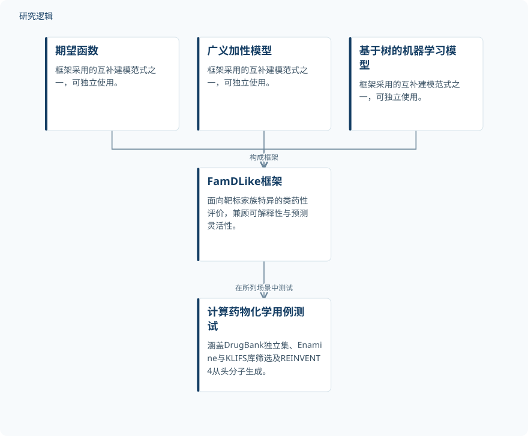

摘要解读
超越全局类药性：面向靶标家族的FamDLike类药性评分框架
Beyond global drug-likeness: The FamDLike framework as a target family-specific drug-likeness score.
解读更新 2026-10-17 10:26 · 依据公开摘要整理，未核验全文细节
同一套类药性标准，是否适合所有靶标家族？FamDLike将靶标家族差异纳入小分子评价，为理解虚拟筛选与生成式分子设计中的评分偏向提供了一个具体切口。
文章目录
全局类药性标准可能偏向哪些分子？
类药性评分用于评价小分子的理化特征，既可充当虚拟筛选的过滤条件，也可作为生成式设计的奖励函数。摘要指出，QED等通用评分虽被广泛采用，但不同治疗靶标家族的配体并不占据相同的理化空间。
因此，统一标准可能系统性地奖励某些靶标类别、惩罚另一些类别，使被视为“具有类药性”的化学空间收窄。本文关注的不是取消类药性评价，而是让评价更贴近具体靶标家族及项目需求。
用互补模型刻画家族特异性
FamDLike结合了期望函数、广义加性模型和基于树的机器学习模型，覆盖从可解释性到预测灵活性的不同取向。摘要同时说明，这些组件也可以独立使用，具体取决于使用者更重视哪一方面。
框架旨在更准确地区分靶标家族，并探索各家族特异的类药化学空间。摘要列出的测试场景包括DrugBank独立数据集、Enamine与KLIFS化合物库筛选，以及通过REINVENT4开展的从头分子生成。
依据摘要整理的FamDLike框架示意


概括摘要明确列出的模型组成及测试场景，不代表论文原图，也不表达未报告的数据处理或训练流程。
下载 SVG图示关系说明
实线表示相邻阶段的信息流，虚线表示跨阶段联系或反馈。
期望函数 → FamDLike框架：构成框架；广义加性模型 → FamDLike框架：构成框架；基于树的机器学习模型 → FamDLike框架：构成框架；FamDLike框架 → 计算药物化学用例测试：在所列场景中测试
摘要报告的是定性优势与应用定位
作者将FamDLike概括为对既有类药性评分的一种补充，报告其具有更强的区分能力、可解释性和靶标感知能力。不过，摘要没有给出这些优势对应的量化指标、比较幅度或不同模型组件的分项表现。
摘要将早期发现流程中的分子排序和生成化学奖励函数列为适用用途，并说明已提供用于获取分子类药性画像的网页入口。这些表述不应进一步解读为已证明能够提高成药成功率。
测试覆盖与比较强度仍需查阅正文
仅凭摘要，无法判断训练与测试样本规模、具体覆盖哪些靶标家族、数据划分及去重方式，也无法确认与QED等评分比较时的指标、基线配置和统计不确定性。这里的信息缺口不等于论文没有开展相关工作。
DrugBank独立数据集及库筛选、生成任务说明了测试场景，但不足以确定跨家族泛化边界，或判断生成分子的活性、安全性与可合成性是否得到验证。当前资料支持的是框架与用途层面的解读。
阅读启发：先审视奖励函数偏好什么
阅读启发：对生成式设计而言，值得先问评分函数是否把特定类别的偏好当成了普适标准。继续阅读本文时，可重点关注家族特异评分如何改变候选分子的排序，以及可解释性与预测灵活性之间如何取舍；这些问题不预设新评分必然带来更好的分子。
以上为本站阅读启发与建议，不是论文已验证的结论。